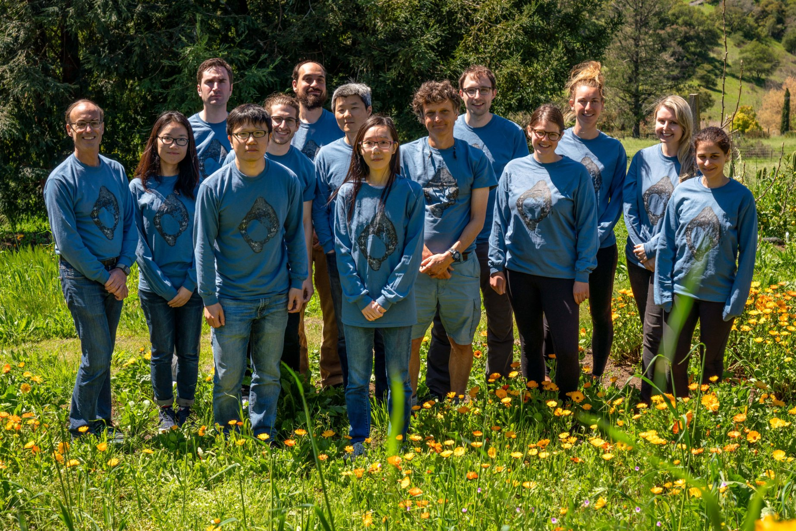
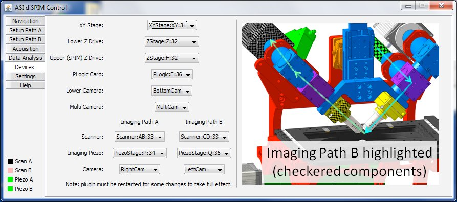
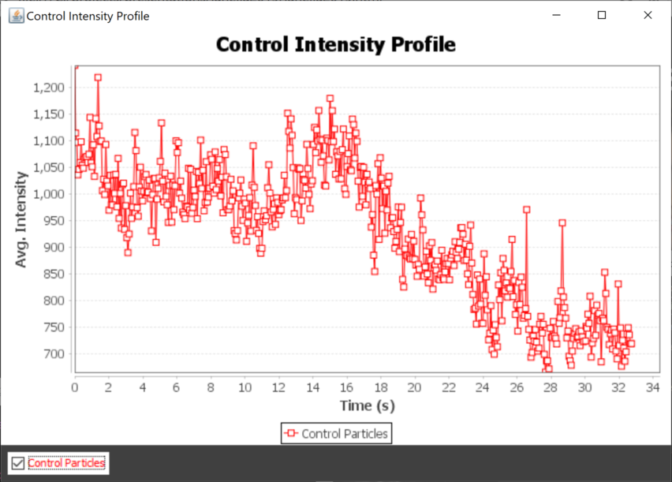
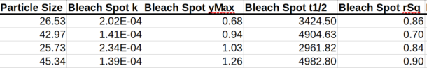

Tools for Cell Biologists using Microscopes

Janelia Imaging Science Conference 2019
Nico Stuurman, Vale lab, UCSF/HHMI
μManager - Open Source Software For Microscopes


- Supports devices from >150 vendors
- Code contributions from >100 authors
- >40,000 registered users, >6,000 microscopes
- >5,000 mentions (G Scholar), cited >1,500 times
diSPIM: μManager as User Interface

Hari Shroff (NIH)
diSPIM: μManager as User Interface

Jon Daniels (ASI)

diSPIM: Live tissue imaging

Kara McKinley
Organoid cell biology

https://valelab.ucsf.edu/~nico
doi: 10.7554/eLife.36739
diSPIM: Live tissue imaging
9 day old mouse embryo, Arl31b-GFP
(Markus Delling, UCSF)
(Markus Delling, UCSF)
3D Viewer in μManager

Uses ClearVolume API by Loic Royer (MPI-Dresden, BioHub-SF)
Automated FRAP analysis

Jess Sheu-Gruttadauria




Measuring single fluoropohore distances at nm precision

Stefan Niekamp


Use uncertainty information from SM fit

nm precision distance measurements: Dynein
Distance between AAA ring and microtubule binding
domain of a dynein monomer changes depending on nucleotide state
doi: 10.1073/pnas.1815826116


Cell marking by photo-conversion

Xiaowei Yan

Cell marking by photo-conversion
Xiaowei Yan


Combining TIRF and Confocal images

Rui Dong

Nagging questions...
- Open Source, great, but...
- Rewarding/funding of tool deployment (versus development)
- Scattered tools: inefficiency or diversity?